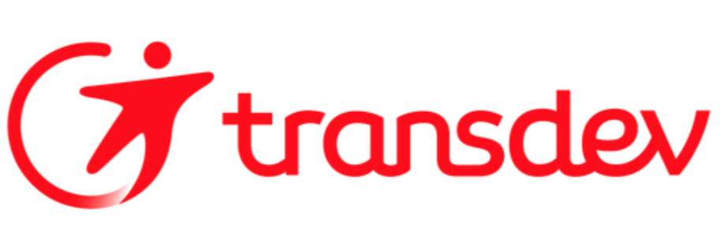

Portfolio — 2025 / 2026
LéoCohen
Étudiant à l'IPSSI en développement & infrastructure
Développement web · Administration système · Réseaux & sécurité
Qui suis-je ?
Étudiant à l'IPSSI, je construis des applications web full-stack, j'installe et je sécurise les infrastructures qui les font tourner, et je câble les réseaux qui les relient. Trois domaines complémentaires, un seul objectif : comprendre la chaîne technique du code jusqu'au switch, et savoir intervenir à chaque étage.
Compétences par domaine
Développement
Applications web full-stack en PHP, Python et C#, du prototype à la mise en production.
Voir les compétences ↻Développement
Systèmes & virtualisation
Déploiement et administration de serveurs Windows Server et environnements virtualisés.
Voir les compétences ↻Systèmes & virtualisation
Réseaux & sécurité
Conception d'architectures réseau Cisco : segmentation, haute disponibilité et sécurisation.
Voir les compétences ↻Réseaux & sécurité
Expérience et formation
Septembre 2021 – Septembre 2024
Bachelor GEA GC2F — Alternance
Université Paris Rives de Seine · Diplôme obtenu.
Septembre 2021 – Septembre 2024
Alternant comptable — Transdev

Contrat d'apprentissage.
2024 – 2025
Année de césure — PVT Nouvelle-Zélande
Programme Vacances-Travail d'un an en Nouvelle-Zélande, avec plusieurs jobs occupés sur place.
Septembre 2025
Première année — Informatique, IPSSI
Entrée dans le supérieur : découverte du développement, des systèmes et des réseaux.
Mai – Août 2026 (3 mois)
Stagiaire Data Analyst — Trelleborg
- Interface Python conçue avec le framework Dash pour afficher et contrôler des données industrielles.
- Tableau filtrable avec mise en évidence des anomalies et infobulles au survol.
- Restitution technique présentée aux équipes en Angleterre.
Mes projets
Développement
Solution full-stack pour un prestataire
Portail sécurisé à quatre rôles avec base SQL et interface en mode sombre.
Voir le détail →Décembre 2025
Solution full-stack pour un prestataire
- Système d'accès sécurisé gérant quatre rôles distincts : administrateur, école, entreprise et utilisateur.
- Modélisation et administration d'une base SQL pour la persistance des quiz et des résultats.
- Interface animée en CSS avec mode sombre.
Application web PHP en architecture MVC
Plateforme de quiz interactifs structurée en modèle, vue et contrôleur.
Voir le détail →Septembre – Décembre 2025
Application web PHP en architecture MVC
Conception et développement d'une plateforme de quiz interactifs structurée en modèle, vue et contrôleur, du routage jusqu'à la couche de données.
Voir le code sur GitHub →Jeu web narratif
Jeu textuel à embranchements, dont vous êtes le héros.
Voir le détail →Septembre – Décembre 2025
Jeu web narratif
Jeu textuel « dont vous êtes le héros » : arborescence de choix, gestion de l'état de la partie et progression du joueur au fil du récit.
Voir le code sur GitHub →Jeu de plateforme 2D sous Unity
Plateformer 2D en C# avec gestion des collisions et paliers de difficulté.
Voir le détail →Projet personnel et académique
Jeu de plateforme 2D sous Unity
- Développement en C# avec character controllers et gestion des collisions.
- Création de niveaux, interface et paliers de difficulté progressive.
Systèmes
Gestion d'identités sous Windows Server
Contrôleur de domaine, unités organisationnelles et stratégies de groupe.
Voir le détail →Janvier – Février 2026
Gestion d'identités sous Windows Server
- Installation et configuration d'un contrôleur de domaine avec déploiement du rôle AD DS.
- Structure d'unités organisationnelles reflétant l'organigramme de l'entreprise.
- Stratégies de groupe restreignant les accès.
Serveur de virtualisation Proxmox
Hyperviseur type 1 hébergeant VM, conteneurs LXC et Docker.
Voir le détail →Février 2026
Serveur de virtualisation Proxmox
- Mise en place d'un hyperviseur de type 1 pour isoler plusieurs environnements d'apprentissage.
- Création et gestion de machines virtuelles et de conteneurs LXC.
- Administration de Docker sur une base Debian.
Projet DataNova
Proposition technique pour moderniser une infrastructure système.
Voir le détail →Étude d'infrastructure
Projet DataNova
Rédaction d'une proposition technique détaillée pour la modernisation d'une infrastructure système : état des lieux, architecture cible et justification des choix.
Réseaux
Architecture LAN redondante pour une PME
Réseau segmenté par service avec VLANs et trunking Cisco.
Voir le détail →Janvier – Février 2026
Architecture LAN redondante pour une PME
- Conception d'une infrastructure réseau segmentée par service.
- Configuration des switches : VTP, VLANs et trunking 802.1Q.
Haute disponibilité et routage inter-VLAN
Redondance Spanning Tree, EtherChannel et routage inter-VLAN.
Voir le détail →Janvier – Février 2026
Haute disponibilité et routage inter-VLAN
- Redondance de niveau 2 avec Spanning Tree et agrégation de liens EtherChannel (LACP).
- Routage entre réseaux par Router-on-a-Stick et interfaces virtuelles.
Routage avancé et durcissement
Routage OSPF, HSRP et durcissement par ACL et pare-feux.
Voir le détail →Travaux pratiques Cisco
Routage avancé et durcissement
- Protocoles de routage OSPF et redondance de passerelle HSRP sur équipements Cisco.
- Règles de sécurité : ACL, Port-Security et pare-feux UFW et OPNsense.
Branchons-nous.
Je cherche une alternance mêlant développement et infrastructure, ainsi qu'un stage en cybersécurité pour la période de mai à septembre 2027. Écrivez-moi, je réponds vite.